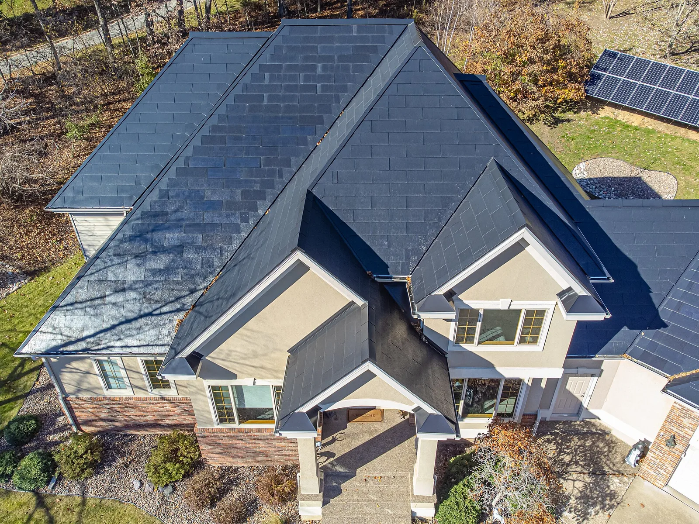
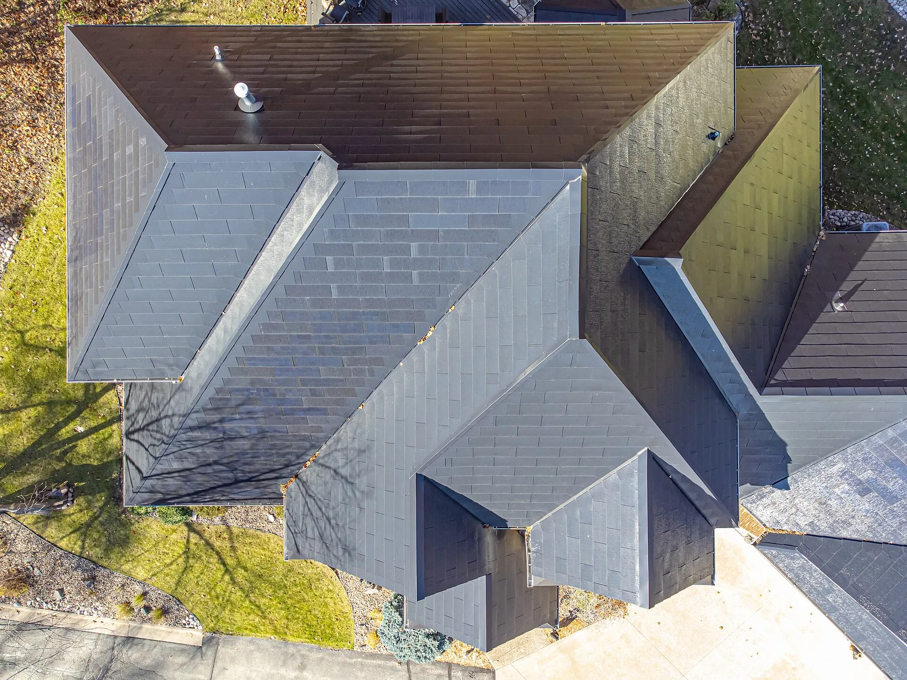

▲ 지붕은 솔라루프 타일, 마당은 일반 패널. 테슬라는 결국 오른쪽을 택했다 ⓒ Wikimedia Commons
테슬라가 솔라루프 타일을 단종했습니다. 2026년 8월 20일자입니다.
2016년 10월 공개 이후 약 10년 만입니다. 회사는 협력 시공사들에게 앞으로 일반 태양광 패널만 공급하겠다고 통보했습니다.
내부 결론은 간명했습니다. "재정적으로 지속 가능하지 않다."
1. 무엇을 약속했었나
솔라루프의 아이디어 자체는 명확했습니다. 지붕 위에 패널을 얹는 대신, 지붕 자재 자체를 태양광 타일로 만드는 것입니다.
| 항목 | 주장 |
|---|---|
| 외관 | 일반 지붕과 구분되지 않는다 |
| 비용 | 지붕 교체 비용을 겸하므로 사실상 저렴 |
| 제시 단가 | 평방피트당 22달러 |
| 내구성 | 일반 기와보다 강하다 |
두 번째 논리가 핵심이었습니다. "어차피 지붕을 새로 얹어야 한다면, 그 돈으로 발전까지 되는 지붕을 얹자"는 계산입니다. 이 논리가 성립하려면 단가가 일반 지붕과 크게 차이 나지 않아야 합니다.
2. 실제로는 어떻게 됐나
| 항목 | 목표 | 실제 |
|---|---|---|
| 주당 설치 | 1,000채 | 21~32채 (최대치) |
| 달성률 | — | 95% 이상 미달 |
| 누적 설치 | — | 7년간 약 3,000채 |
주당 1,000채를 목표로 했는데 최대 32채였습니다. 7년을 합쳐도 3,000채입니다. 주당 1,000채였다면 3주면 채웠을 숫자입니다.
가격도 약속과 달랐습니다. 2021년 테슬라는 이미 계약된 건에 대해서도 가격을 올렸습니다. 보도된 사례에서 한 고객의 계약 금액은 약 7만2,000달러에서 약 14만6,000달러로 뛰었습니다. 두 배가 넘습니다.
이 가격 인상은 집단소송으로 이어졌고, 2023년 600만 달러에 합의됐습니다.

▲ 솔라루프는 지붕 자재와 발전 설비를 하나로 합치려는 시도였다
3. 왜 안 됐나
기술이 아니라 시공이 문제였습니다.
| 영역 | 내용 |
|---|---|
| 시공 인력 | 지붕 시공과 전기 배선을 동시에 다뤄야 한다 — 두 자격이 겹치는 인력이 드물다 |
| 지붕 형상 | 집마다 형태가 달라 표준화가 어렵다 |
| 발전 효율 | 타일은 각도를 조절할 수 없어 일반 패널보다 불리 |
| 단위당 출력 | 같은 면적에서 일반 패널보다 적게 나온다 |
| 보수 | 타일 하나가 고장 나면 지붕을 뜯어야 한다 |
세 번째 항목이 결정적입니다. 일반 태양광 패널은 지붕 위에 각도를 세워 설치합니다. 태양 고도에 맞춰 기울이면 발전량이 크게 올라갑니다.
솔라루프는 지붕 자체가 되므로 지붕 경사를 그대로 따릅니다. 지붕이 태양광에 최적화된 방향과 각도로 지어져 있을 이유가 없습니다. 같은 면적에서 발전량이 떨어질 수밖에 없습니다.
4. 테슬라가 대신 할 것
| 구분 | 내용 |
|---|---|
| 주력 제품 | 일반 지붕형 태양광 + 파워월 조합 |
| 제조 | 미국 내 대규모 태양광 패널 생산 추진 |
| 웹사이트 | 솔라루프 페이지가 태양광 패널 페이지로 리디렉션 |
| 메뉴 | 에너지 내비게이션에서 'Solar Roof' 항목 삭제 |
웹사이트에서 항목을 지웠다는 것은 되돌릴 생각이 없다는 신호입니다. 일시 중단이라면 "일시 품절"이나 "대기자 등록"으로 남겨두는 것이 일반적입니다.
파워월과의 조합을 강조하는 방향도 읽힙니다. 발전 설비 자체보다 저장과 관리 쪽으로 무게중심을 옮기는 구성입니다. 이쪽은 표준화가 쉽고 시공 난도가 낮습니다.

▲ 테슬라 웹사이트에서 솔라루프 페이지는 태양광 패널 페이지로 넘어간다
5. 이미 설치한 사람은
보도에는 기존 설치 고객에 대한 보증·유지보수 방침이 구체적으로 명시되지 않았습니다.
단종된 제품에서 통상 문제가 되는 지점은 두 가지입니다. 하나는 교체용 타일 재고이고, 다른 하나는 시공 가능한 인력의 유지입니다. 약 3,000채라는 설치 규모는 부품 공급망을 유지할 유인이 크지 않은 숫자입니다.
국내에는 솔라루프가 정식으로 공급된 적이 없습니다. 다만 이 사례는 건물 일체형 태양광(BIPV)이라는 개념 전반에 시사점을 남깁니다. 국내에서도 창호·외벽·지붕에 태양광을 통합하는 시도가 이어져 왔고, 같은 시공·효율 문제를 안고 있습니다.

▲ 테슬라는 미국 내 대규모 태양광 패널 생산 쪽으로 방향을 틀었다
6. 정리
테슬라가 2026년 8월 20일 솔라루프 타일을 단종했습니다. 2016년 10월 공개 이후 약 10년 만이며, 내부 결론은 "재정적으로 지속 가능하지 않다"였습니다.
7년간 미국 설치는 약 3,000채에 그쳤습니다. 최대 속도가 주당 21~32채였는데, 목표는 주당 1,000채였습니다. 95% 이상 미달입니다.
가격은 평방피트당 22달러를 약속했지만 2021년 급등해 한 고객 사례에서 약 7만2,000달러가 약 14만6,000달러가 됐고, 2023년 600만 달러에 집단소송이 합의됐습니다. 앞으로는 일반 지붕형 태양광과 파워월 조합에 집중합니다.